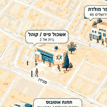

באר שבע · עושים קהילה
מפת החוסן של שכונה ט׳
מה קיים בשכונה, מה בתכנון ואיך מצטרפים.
פתחו את המפהשמרו את המפה במסך הבית
כך המפה תופיע בטלפון כמו אפליקציה, עם אייקון משלה. לא צריך להוריד כלום מחנות האפליקציות.
פתחתם את הקישור מתוך וואטסאפ? קודם בוחרים „פתיחה בדפדפן” מהתפריט, ורק אז ממשיכים.
באייפון
- פותחים את המפה בדפדפן Safari (בכפתור למעלה).
- לוחצים על כפתור השיתוף ⬆︎ בתחתית המסך.
- גוללים ובוחרים „הוסף למסך הבית”, ואז „הוסף”.
באנדרואיד
- פותחים את המפה בדפדפן Chrome (בכפתור למעלה).
- לוחצים על שלוש הנקודות ⋮ בפינה העליונה.
- בוחרים „הוספה למסך הבית” או „התקנת אפליקציה”, ואז „הוספה”.
סורקים במצלמה של הטלפון ומגיעים לעמוד הזה.
שאלות? osimkehilanet@gmail.com · עושים קהילה